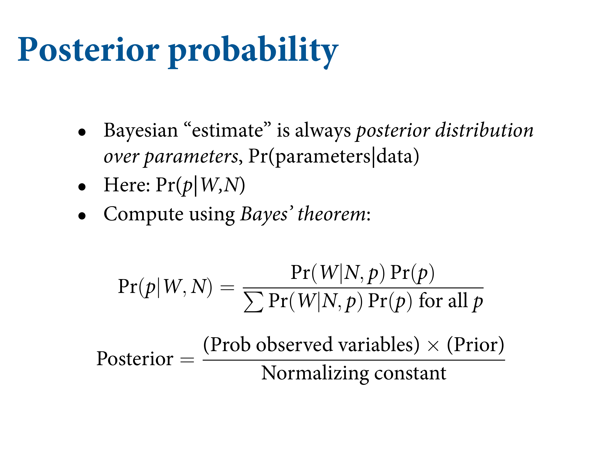
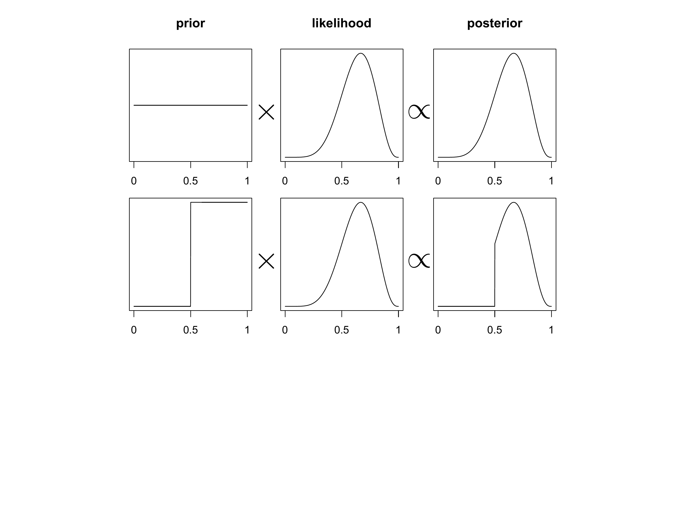
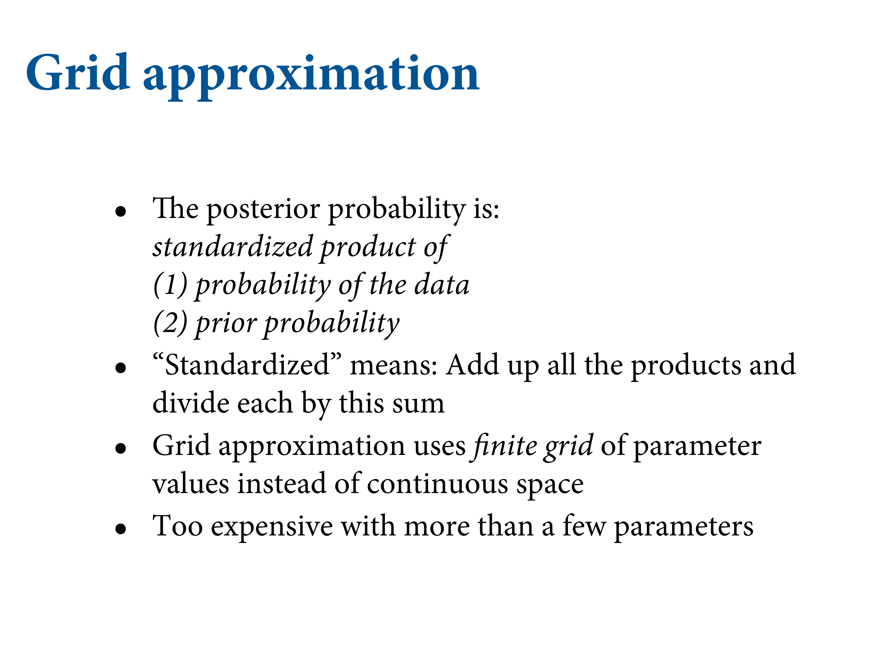
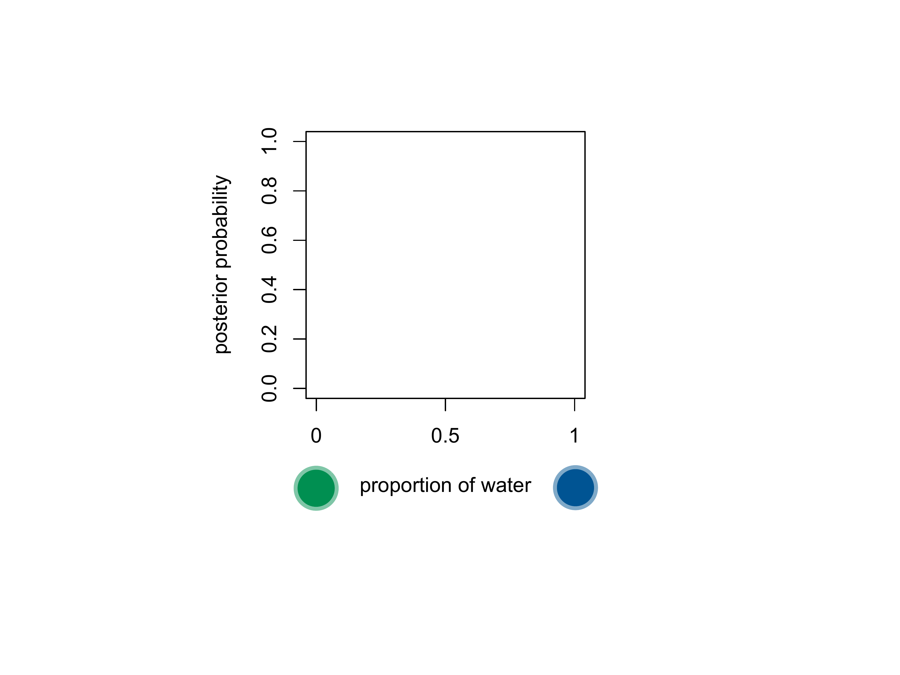
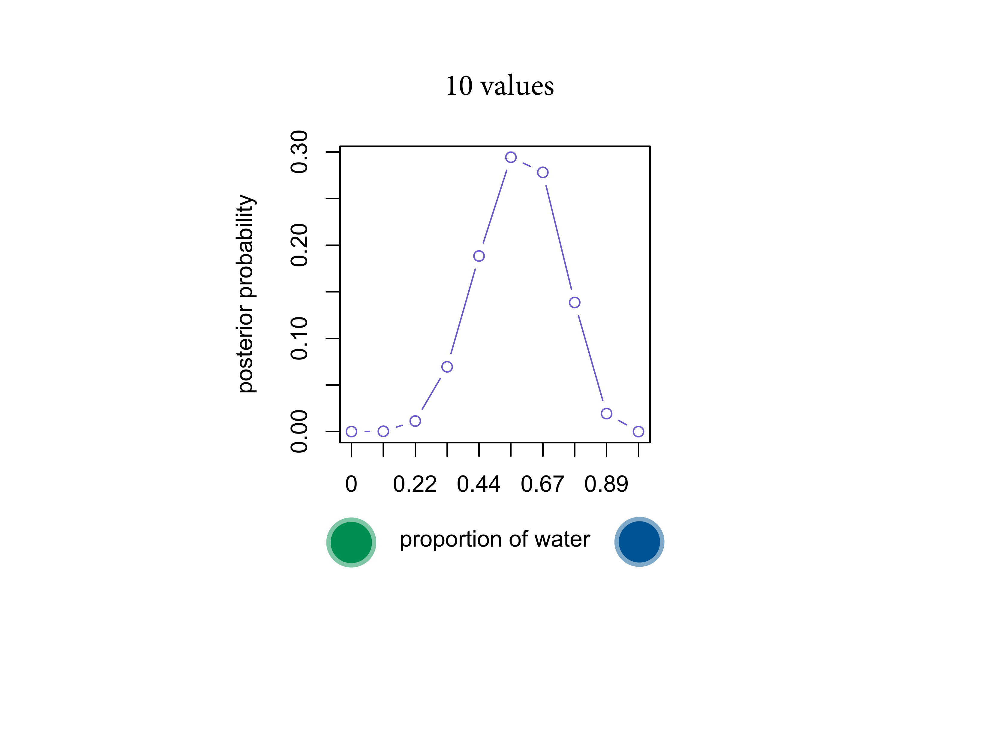
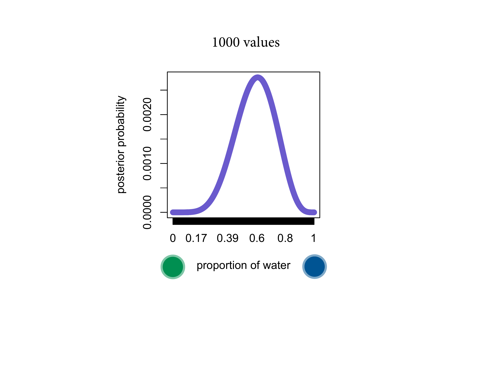
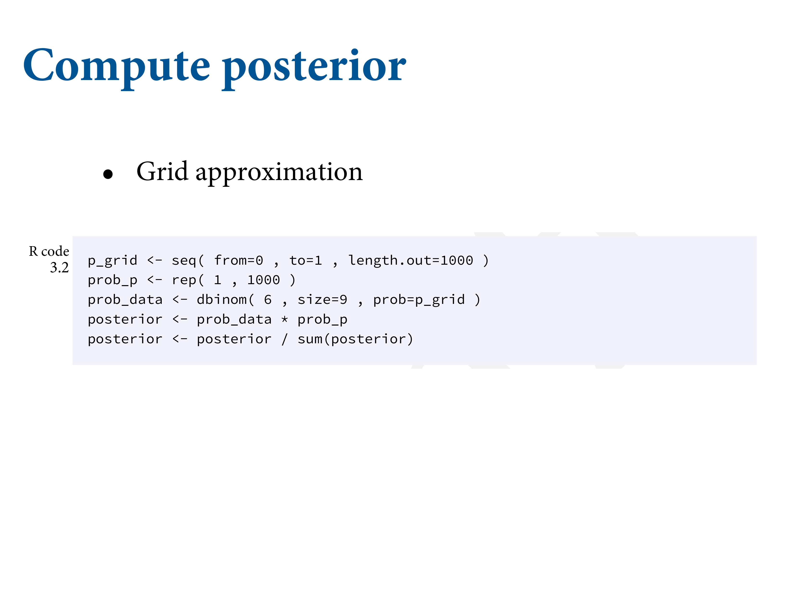
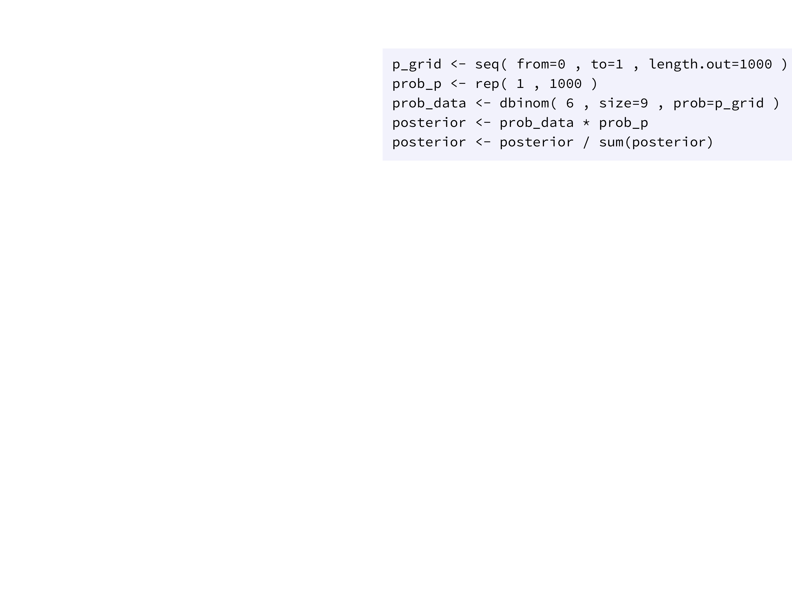
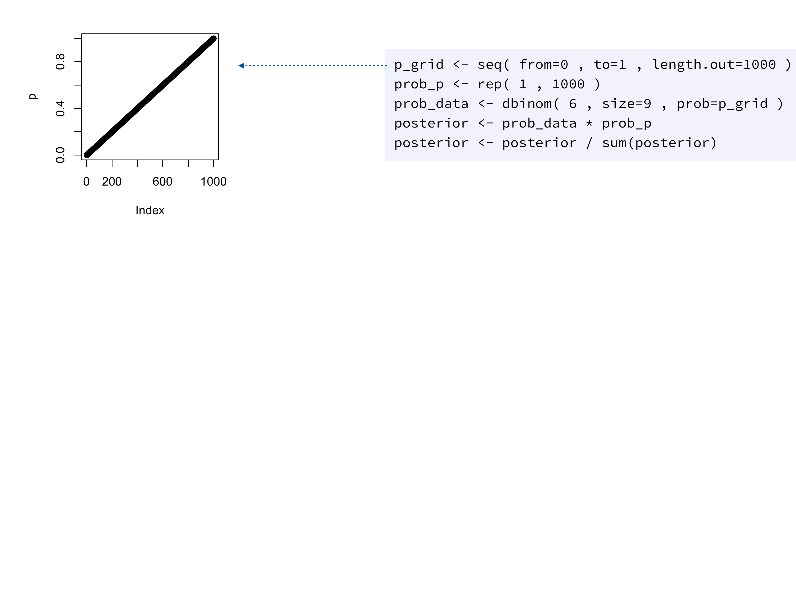
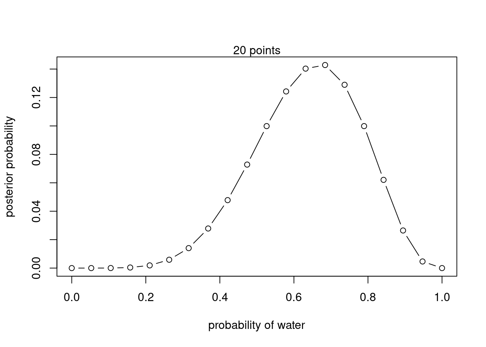

1.4 Making the model go
Figure 1.29: The code looks a little different. What you must do mechanically is compute the posterior. Your target is always a posterior distribution. Nice not to have a choice.
You use Bayes theorem. We’re multiplying the prior by the number of ways the data could have arisen, then standardising. Normalise by summing up the numerators. Its job is to count up the relative number of ways that you could see the data.
Figure 1.30: The model we just updated looks like this. I want to emphasise the multiplication. You take each value, a vertical slice, through each point. In the model we just did, the data are running the show. The prior is not doing any work. We could do better.

Figure 1.31: We could use our knowledge that more than half of the Earth is covered by water. YOu can embody that in the prior and that lets you get to the answer faster.
Figure 1.32: Posterior distributions are always: the relative number of ways each value you have could be true, given the data and the prior probability.

Figure 1.33: You have a choice about how to approximate that posterior. Today we’ll use grid approximation, because it forces you to see we’re just counting up. Markov chains solve a whole lot of important problems.

Figure 1.34: Instead of considering every infinitesimal possibility and integrating over them, we’re only going to consider a finite number. Grid approximation works well here, but not with more than a few variables.

Figure 1.35: We immediately rule of 0 and 1. If your grid is only 3, we already have some information. Let’s consider 5.




Figure 1.36: This is still a finite grid. But this is just an approximation, but it’s a very good one.
Figure 1.37: Here’s the code.
Figure 1.38: Step one: define the grid.

Figure 1.39: Then define the prior probability \(p\).

Figure 1.40: Now the probability of the data. We put the whole p_grid in.

Figure 1.41: Then finally standardise it. Here nothing happens. The important thing is the multiplication step.


# define grid
p_grid = seq(from = 0, to = 1, length.out = 20)
# define prior
prior = rep(1, 20)
# compute likelihood at each value in grid
likelihood = dbinom(6, size = 9, prob = p_grid)
# compute product of likelihood and prior
unstd.posterior = likelihood * prior
# standardise the posterior, so it susms to 1
posterior = unstd.posterior / sum(unstd.posterior)
# plot
plot(p_grid, posterior, type = "b",
xlab = "probability of water",
ylab = "posterior probability")
mtext("20 points")With four different grid sizes.
lapply(c(5, 100, 1000, 1e5), function(grid_size){
p_grid = seq(from = 0, to = 1, length.out = grid_size)
# define prior
prior = rep(1, grid_size)
# compute likelihood at each value in grid
likelihood = dbinom(6, size = 9, prob = p_grid)
# compute product of likelihood and prior
unstd.posterior = likelihood * prior
# standardise the posterior, so it susms to 1
posterior = unstd.posterior / sum(unstd.posterior)
# plot
plot(p_grid, posterior, type = "b",
xlab = "probability of water",
ylab = "posterior probability")
mtext(grid_size)
})## [[1]]
## NULL
##
## [[2]]
## NULL
##
## [[3]]
## NULL
##
## [[4]]
## NULL